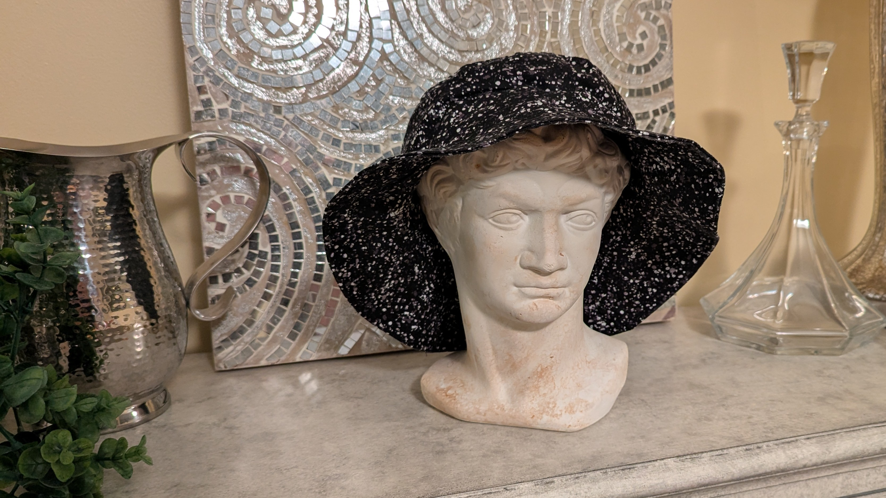

Night Sky Bucket Hat

As part of an Introduction to Sewing class at the University of Cincinnati, I created a bucket hat to practice stitching circles, using interfacing, and constructing slightly more complex garments. The hat has since found its home with an ecstatic friend of mine, as I can't help but look like I was part of a disastrous three-hour tour when I put on a bucket hat (looking at you, Gilligan!).
Gallery
